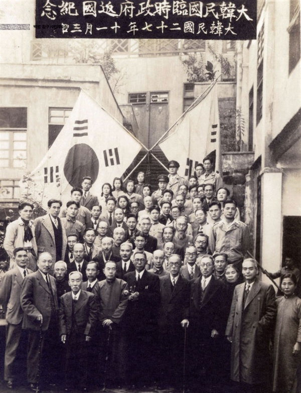

<!DOCTYPE html>
<html>
  <head>
    <link rel="stylesheet" href="one.css" />
  </head>
  <body></body>
</html>
<html lang="en">
<head>
  <meta charset="UTF-8">
  <meta name="viewport" content="width=device-width, initial-scale=1.0">
  <title>Document</title>
    <style>
     .content {
    font-weight: bold;
    cursor: hand;
    color: black;
    font-size: 30px; /* 텍스트 크기 조정 */
     } 
    body {
      background-color: whitesmoke;
      background-size: cover;
      background-repeat: no-repeat;
      background-position: center;
    }

    /* 링크를 진하게 만들기 위한 스타일 */
    a {
      font-weight: bold;
      color: red; /* 링크를 구분하기 위해 색상을 파란색으로 변경 */
    }

    /* 일반 텍스트 스타일 */
    .bold-text {
      font-weight: bold;
    }

    /* 이미지 스타일 */
    .image {
      width: 100%;
      height: auto;
      object-cover: cover;
    }
  </style>
</head>
<body>
  <div class="w-[2567px] h-[3284px] relative overflow-hidden bg-white">
    <p class="absolute left-[71px] top-[50px] italic text-[24px] text-black z-20">
    </h1>
    <h1 class="fifth" onclick="openPopup()">Remember them</h1>
    <script>
      function openPopup() {
        var popup = window.open("", "Popup", "width=900,height=300");
        popup.document.write("<h2>우리의 투쟁은 영원히 계속될 것이다.</h2>");
      }
    </script>
  </div>
    </p>
    <p
      class="w-[2271px] h-[257px] absolute left-[71px] top-[150px] text-[48px] text-left text-[#914e4e] z-20"
    >
      <a href="https://ko.wikipedia.org/wiki/%EB%8F%85%EB%A6%BD%EC%9A%B4%EB%8F%99%EA%B0%80">독립운동가란?</a><br />

      ㄴ
        <span style="cursor:hand; color: black; font-weight: bold;">
          한국 민족주의는 1876년 강화도조약 전후로 일제침략이 시작된 이후, 
        </span>
        <br>
        <span style="cursor:hand; color: black; font-weight: bold;">
          외교적으로 국권을 상실하게 되는 1905년 을사늑약을 체결 전후까지 일제의 단계적 침략에 대한 각종 배일운동과 의병항쟁 과정에서 형성되었다.
        </span>
        <br>
        <span style="cursor:hand; color: black; font-weight: bold;">
          1905년 을사늑약 전후로 1919년 3.1 운동 사이에 있었던 의병전쟁과 민족의 근대적 역량을 길러 국권을 찾으려는 애국계몽운동 등의 방향과 이념이 정립되면서 성장해 갔다.
        </span>
        <br>
        <span style="cursor:hand; color: black; font-weight: bold;">
          3.1 운동을 계기로 큰 발전이 이뤄지면서, 1945년 광복 때까지 국내외에서 전개된 독립운동의 원동력이 되었다
        </span>
        <br>
        <span style="cursor:hand; color: black; font-weight: bold;">
          한국의 독립운동가들은 핵심적 인물에 양반 출신이 많았다는 지적이 있으나 전체적으로는 상민 이하의 신분 출신자도 많았다.
        </span>
        <br>
    </p>
    <div class="w-[1786px] h-[1355px] absolute left-[71px] top-[500px] z-10">
      
    </div>
    <p class="absolute left-[71px] top-[2000px] text-[36px] text-black z-20">
      <p style="font-weight:bold;">1945년 11월 3일 임시정부 환국 기념 촬영 </p>
    </p>
    
    <script>
     function openYoutubeVideo() {
  var url = 'https://www.youtube.com/embed/2-mfYZz29oc?autoplay=1&mute=1';
  document.location.href = url;
}
    </script>
    
    <p class="absolute left-[71px] top-[2700px] text-[36px] text-black z-20">
      <a href="https://ko.wikipedia.org/wiki/%EC%95%88%EC%A4%91%EA%B7%BC">안중근 安重根, (1879년 9월 2일~1910년 3월 26일) 대한제국의 독립운동가</span><br></a>

      <div style="text-align: left;">
        <span style="cursor:hand; color: black; font-weight: bold;">
          동학 농민 운동에서 아버지 안태훈(安泰勳)이 몇몇 본래의 목적을 가지지 않은 동학군 부대들을 정벌하는 데 함께 참여하였고,
        </span>
        <br>
        <span style="cursor:hand; color: black; font-weight: bold;">
          대한제국 말기에는 학교 설립과 교육운동과 국채보상운동을 하였으며 한때 복권 사업과 비슷한 채표회사(彩票會社) 활동을 하기도 했다.
        </span>
        <br>
        <span style="cursor:hand; color: black; font-weight: bold;">
          1909년 우덕순, 유동하, 조도선과 소수의 결사대를 조직하여 만주의 하얼빈역 근처에서 초대 한국통감 이토 히로부미 등의 하차 시 암살을 준비하였다. 
        </span>
        <br>
        <span style="cursor:hand; color: black; font-weight: bold;">
          1909년 10월 26일 하얼빈역에 잠입하여 역전에서 러시아군의 군례를 받는 이토 히로부미를 암살하였다. 이후 러시아제국군 헌병에게 붙잡혀 일본 총영사관으로 옮겨졌고,
        </span>
        <br>
        <span style="cursor:hand; color: black; font-weight: bold;">
        재판관할권이 일본에 넘겨졌다.1910년 3월 26일 오전 10시에 살인의 죄형으로 관동주 뤼순형무소에서 교수형으로 사망했다.
        </span>
        <br>
        </span>
    </div>
    </p>
    
    <p class="absolute left-[1284px] top-[2700px] text-[36px] text-black z-20">
      <a href="https://namu.wiki/w/%EA%B9%80%EA%B5%AC">김구(金九, 1876년 8월 29일 (음력 7월 11일) ~ 1949년 6월 26일) 일제 강점기 독립 운동가이자 대한민국의 독립 운동가</span><br></a>
      <div style="text-align: left;">
        <span style="cursor:hand; color: black; font-weight: bold;">
            항일 의열단체 한인애국단을 이끌었고 대한민국 임시정부 주석을 역임하였으며 1962년 '건국훈장 대한민국장'이 추서되었다.
        </span>
        <br>
        <span style="cursor:hand; color: black; font-weight: bold;">
            양반가의 후손으로 태어나 과거에 응시했으나 낙방, 이후 동학농민혁명에 참가했고, 한때 불교 승려로 활동했다.
            <br>
            <span style="cursor:hand; color: black; font-weight: bold;">
            젊어서 동학교도였고, 불교에 귀의해서 법명 원종(圓宗)을 얻은 승려였으며, 28세 때 부친 탈상 후 기독교에 입문하였다.
        </span>
        <br>
        <span style="cursor:hand; color: black; font-weight: bold;">
            양산학교, 보강학교 등에서 교육자로 교편을 잡기도 했고, 해서교육총회 학무총감으로도 활동했다. 교육·계몽 운동 중 일본 제국 경찰에 연행되어 수감되기도 하였다.
        </span>
    </div>
    </p>
  </div>
</body>
